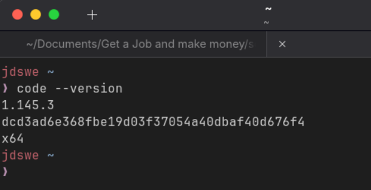

Esta web documenta el proceso de instalación de las herramientas que utilizo para este proyecto.
Uso Ubuntu 26.04.1 LTS (Long Term Support) porque me encanta su facilidad de uso y su rapidez para desarrollar software.
Git es una herramienta de control de versiones, que nos permite gestionar el versionamiento y la trazabilidad del producto de software.
sudo apt updatesudo apt install gitgit config --global user.name "Jose"
git config --global user.email "tu-correo@ejemplo.com"
VS Code (Visual Studio Code) es un editor de código liviano, el más usado para desarrollar software, es muy querido por la comunidad ya que permite usar muchos lenguajes y es fácil, liviano y rápido de usar.
sudo apt updatesudo snap install code --classiccode --versioncode .Documentación oficial de VS Code
